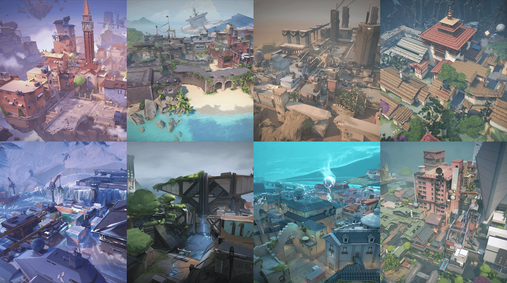

What are esports?
Esports are competitions that take place within the field of video games and that have reached a very high popularity level in the entertainment industry. Its name comes from electronic sports.

In order for a game to be considered an esport, it must be designed so that 2 or more players face each other, even though typically these games tend to be team oriented.
Valorant
Valorant is a first-person shooter game developed by Riot Games with 2 teams of 5 people in which one team must plant a bomb called “spike” and the other team must avoid it or defuse it in time in case it gets planted. Both teams switch sides at the half of the match, attackers become defenders and vice versa.
It is a great example of esports, from the start of its beta phase on April 7, 2020 and later the final version on June 2 of the same year, its great potential as an esport was seen, which continued to improve until it won in 2022 the award for best esport of the year, dethroning League of Legends, a game created by the same company and which had been at the top of esports for years.

Agents
To bring variety to the game and avoid all matches being the same, there is a variety of characters named "agents", each with their unique abilities and grouped into 4 different categories.
- Duelists: It's the most popular class in the game and its abilities are focused on getting kills.
- Initiators: As its name indicates, its abilities are usually focused on providing utility at the beginning of the round, either revealing enemy positions or disabling them to make it more difficult for them to defend.
- Sentinels: Their abilities are used to defend specific areas of the map, making it difficult for enemies to enter the area they are watching.
- Controllers: They block the enemy vision with smokes in order to have an advantage on the terrain.
Mapss
There is a total of 9 maps in the game, each with its characteristic quirks and size, however, they are not all activated when looking for a match, for competitive game modes there is a map rotation in which there are only 7 activated at a time, this disabled maps change from time to time.
Weapons
Each round, players can choose from a wide variety of weapons, including pistols, submachine guns, shotguns, etc. Each one for a specific game style.
These weapons also have redesigns that can be purchased with real money which change the firing sounds, reload animations and some even have a special animation when killing the last enemy, these redesigns, most comonly called "skins" do not give any advantage, they are rather somewhat focused on customization.